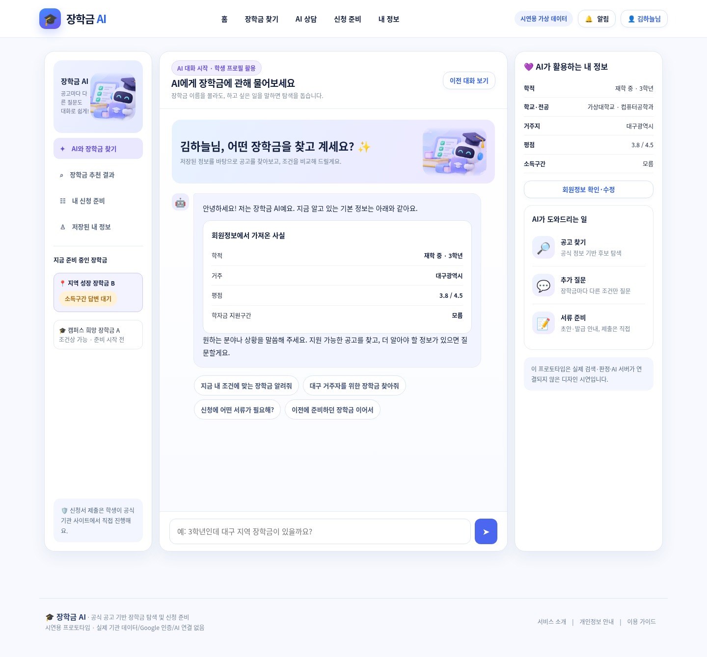

지역 성장 장학금 B
가상재단 · MOCK-02 v1
시연용 가상 공고
주요 조건: 대구광역시 거주 AND 소득구간 5 이하
모집 상태: 데이터 미입력
모집 상태: 데이터 미입력
이 페이지는 디자인 확인을 위한 정적 샘플입니다. Google 로그인, AI 답변, 기관 데이터 연동은 포함하지 않습니다.

공고 조건: 대구 거주 · 내 정보: 대구 거주
공고 조건: 5구간 이하 · 내 정보: 모름
지원자는 대구광역시에 거주하며, 소득구간이 5 이하여야 한다.
실제 공식 기관 공고가 아닙니다. 공식 URL이 등록되지 않았습니다.
대구 거주: 충족 · 소득구간: 확인 필요 · 모집 상태: 미확인